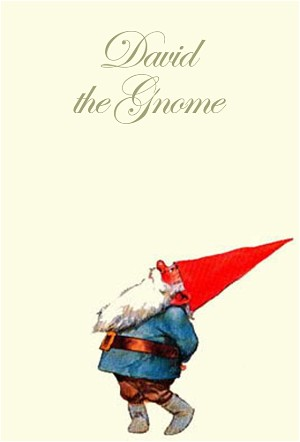

Episodes
Season 1
| # | Title | Air Date | Synopsis |
|---|---|---|---|
| 1 | Good Medicine | 1985-10-26 | In the first episode "Good Medicine" we are told some facts that Gnomes, such as their height, weight, strength and what they like to eat. David also tells us all about their enemies, the Trolls. |
| 2 | Witch Way Out | 1985-11-02 | Lisa is very worried about David and Swift, their red fox, when they don't arrive home from a trip. In fact, they have been captured by some trolls called Hooley, Pat, and Poopey. Lisa goes out to search for them and whe |
| 3 | David to the Rescue | 1985-11-09 | David is called to Italy to treat a gnome girl. She had eaten a strawberry that had been sprayed with pesticide. The only plant that can cure her is the Shining Begonia. David travels to the Alps and outsmarts a snake to |
| 4 | The Baby Troll | 1985-11-16 | The episode starts with Lisa explaining about the clothes gnomes wear. She mentions that David is out helping two deer who have their antlers locked together. David has to saw through the antlers to break them apart. Whe |
| 5 | Little Houses for Little People | 1985-11-23 | David explains how gnomes build their houses. The entrance of the house is under a tree, with an underground tunnel leading to another tree. Many other gnomes and animals help build the houses. David and Lisa get a messa |
| 6 | The Wedding That Almost Wasn't | 1985-11-30 | It is wintertime in the forest, and David and Lisa are going to a friend's wedding. David explains that trolls love to ruin weddings, so the gnomes had already set up some clever traps. David performs the wedding for the |
| 7 | To Grandfather's House We Go | 1985-12-07 | David is expecting a visit from his granddaughter, Susan. In a deep part of the forest lives a real witch with her cat. Once the witch leaves for the day, her cat goes wandering in the woods. Lisa goes to pick up Susan, |
| 8 | Ghost of Black Lake | 1985-12-14 | This episode begins with David explaining how gnomes make glass. Then he is called to the palace, where the king tells him about a little wizard named Tiraland. The wizard stole all of the gold in the castle, and now the |
| 9 | Kingdom of the Elves | 1985-12-21 | The episode starts out with David telling how gnomes make pottery and candles. When he goes outside, another gnome tells him that a little deer has a barbed wire around his neck and needs help. David calls for Swift, but |
| 10 | Young Dr. Gnome | 1985-12-28 | David's nephew Jonathan is coming to visit. Jonathan is a city gnome and his parents want him to be a doctor, but he doesn't want to. |
| 11 | The Magic Knife | 1986-01-04 | Lisa's sister, Julie, comes to visit, and she brings along a copy of a scalpel. Julie says the copy came from the Himalayas. David decides to journey there to find the original knife. |
| 12 | Happy Birthday to You | 1986-01-11 | David tells about the childhood of gnomes, using his friend Harry and his family as an example. David tells about Harry's children, Billy and Belle, and the way children grow up. It is also Billy and Belle's birthday, an |
| 13 | The Siberian Bear | 1986-01-18 | David is in his garden picking vegetables when he receives a telepathic message. The message is coming from the king of Siberia. David tells Lisa that they will be gone for a long time, and he builds a sort of bench for |
| 14 | Foxy Dilemma | 1986-01-25 | Susan goes to a sawmill with David, who explains how gnomes cut down dead trees to make furniture and birdhouses. Susan gets bored and goes for a ride on Swift with a little boy named Tom. Swift gets his leg caught in a |
| 15 | Three Wishes | 1986-02-01 | A poor woodsman saves Lisa after she is attacked by his cat. To express his generosity, David grants the woodsman three wishes, which do not go as planned. When David grants the woodsman's wish to become a rich man, the |
| 16 | Ivan the Terrible | 1986-02-08 | David and Lisa travel to Siberia where David is called upon by the gnome king. The king wants David to stop a mean gnome called Ivan, who is stealing furs from the human hunters and giving the gnomes a bad name. David en |
| 17 | Rabbits, Rabbits Everywhere | 1986-02-15 | David and Lisa journey to Holland to help some farmer gnomes. It is raining heavily, and there are dozens of rabbits trapped on a small island in the floodwater. The gnomes build rafts, and with the help of Swift, they s |
| 18 | Any Milk Today | 1986-02-22 | David remembers a time when his children Lily and Harold were kids. Lisa realized the milkwoman had not delivered milk that day, and she knew something was wrong. David and Harold and Lily decided to go to town and see t |
| 19 | The Shadowless Stone | 1986-03-01 | David and Lisa are summoned to the palace of King Conrad. The king lives behind a waterfall and has a jester named Tim. King Conrad tells the gnomes he wants them to go to the island of Mentoa and find the valuable shado |
| 20 | Friends in Trouble | 1986-03-08 | David and Lisa learn that a hunter is in the forest trapping birds. The man even caught David's friend, the flycatcher. While Lisa tries to feed the flycatcher's family, David rides on a raven to the city. There he finds |
| 21 | Airlift | 1986-03-15 | David meets up with his friend Cosmo, who says he is worried about the bats in the forest. Cosmo says the humans are poisoning the insects the bats eat, and many of them are starving. The bats are currently hibernating i |
| 22 | Big Bad Tom | 1986-03-22 | David and Lisa go to a birthday party in a windmill for a David's nephew, Maxmilion, where the two cure the former's twin brother Paul's cold. The farm has three friendly cats and one big mean black cat named Tom. During |
| 23 | Kangaroo Adventure | 1986-03-29 | Susan is staying with David and Lisa and finds a gnome xray in an old trunk. It is an xray of the Australian Prince Rex, who just happens to be coming to visit David that day. David tells Susan about how he and Lisa went |
| 24 | The Careless Cub | 1986-04-05 | David and Lisa go for a walk in the forest and meet a wolf. The wolf tells David that his wife and one of his cubs ate meat that had been poisoned by a shepherd. The wife had died, but the cub was still holding on. David |
| 25 | The Gift | 1986-04-12 | David goes to see an old friend of his, a human doctor named Walter. David wants to give Walter a pocketwatch that has been in the gnome family for generations. David tells Walter a story about the time he let a human bo |
| 26 | The Mountains of Beyond | 1986-04-19 | David and his wife Lisa must go off into the mountains because their time on Earth is almost over. They know they will not live past 400 years old. David finishes writing his journal about the gnomes. He and Lisa are vis |